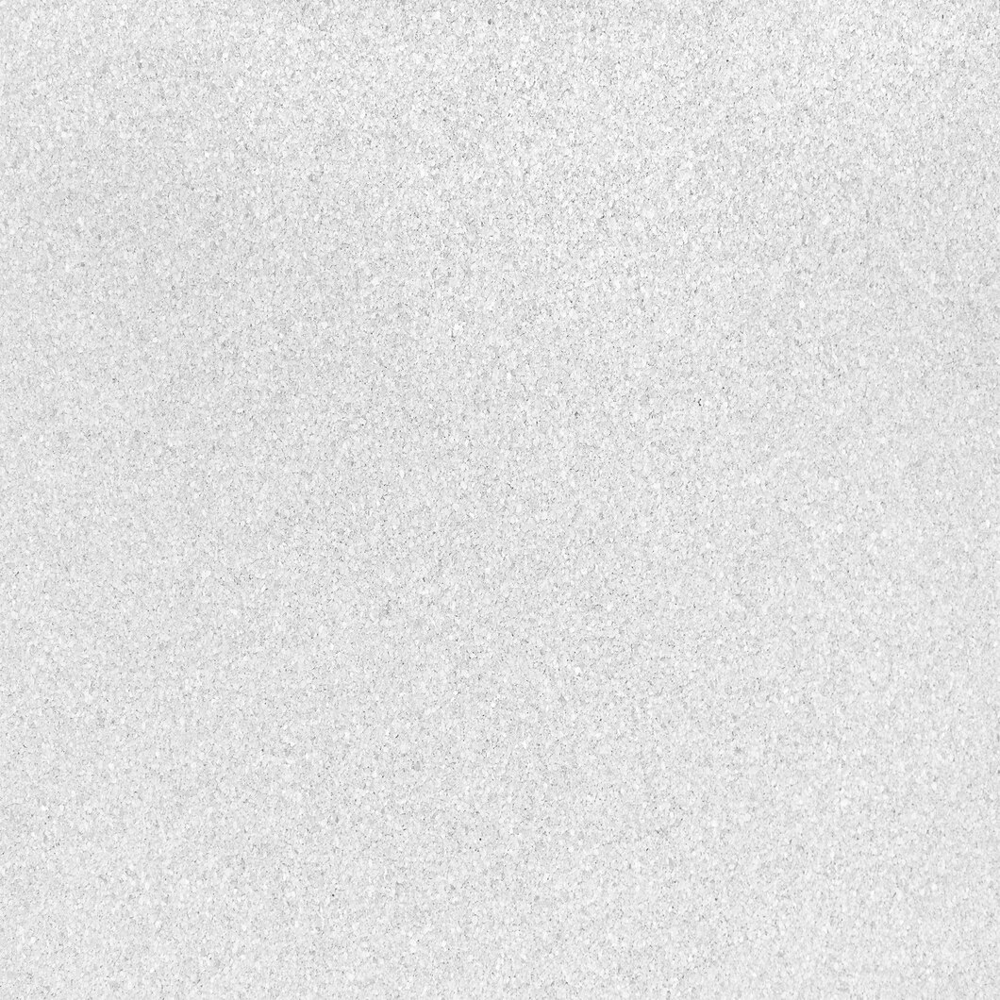

Grote Thema's
Grote Thema's
Platform Grote Thema's is een toegankelijke pagina waarop docenten werkvormen kunnen bekijken.
Daarnaast kunnen de docenten via de zoekbalk ook werkvormen vinden. Verder kunnen docenten zelf werkvormen met een beschrijving erbij uploaden.
De website is simpel en overzichtelijk zodat de gebruiker snel kan vinden waar diegene naar opzoek is.